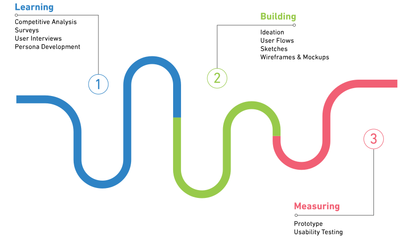

OVERVIEW
WebMD is having a hard time increasing the user acquisition and retention rate. It also wants to provide a more personalized experience for the users when browsing through its massive library of medical content.
MY ROLE
UX Design
Visual Design
Interaction Design
Prototyping
Research
DURATION
3 Weeks
TYPE OF WORK
Coursework Project
CHALLENGE
Increase user acquisition and retention.
WebMD is having a hard time increasing the user acquisition and retention rate. It also wants to provide a more personalized experience for the users when browsing through its massive library of medical content.
SOLUTION
Relevant content, all in one place.
The new, redesigned WebMD mobile app provides users with a personalized experience by curating and presenting relevant medical tips, news and content based on their personal information, family history of medical issues, and habits.
PROCESS
COMPETITIVE ANALYSIS
To note the key features and different strengths of similar products, we decided to analyze three main competitors of WebMD: Mayo Clinic, Healthline, and Everday Health.
SURVEY
From our existing knowledge and experience with WebMD, our assumption was simple--users only come to WebMD when they are sick, and do not proactively browse its content to get medical information when they are not. To confirm our assumption and to understand the motivation and behavior of our users, we conducted two rounds of surveys. From the first survey of 192 participants, we learned that:
- Most people have used WebMD before, but only on occasions when they were sick and wanted to diagnose their symptoms
- Social media feed was the most common medium users chose in receiving medical news and updates
From this result, we confirmed that user acquisition was not the issue at hand, but we had to create a feature that would bring these users back to WebMD on a regular basis.
Have used WebMD before
Have never used WebMD before
Only 3% of the participants considered themselves a frequent user of WebMD.
"Social media feed was the most common method for the users in keeping updated with a certain medical condition."
From these insights, we decided to focus on a new feature of a personalized news feed based on users' information. This would provide a more refined content compared to receiving information from a social media feed.
We wanted to ensure that the users would be open to share their personal information and brief medical history with a secured and private app. So we conducted a second round of survey which confirmed that 79% of users who currently suffer from a medical condition or have a history of medical condition would be willing to provide their information in order to receive a more personalized medical information.Analyzing the information obtained from our survey.
USER INTERVIEWS
We conducted six user interviews with potential WebMD users (have used WebMD before, primarily use the internet to receive medical information, or consider themselves health-conscious) to understand the user needs better.
KEY TAKEAWAYS:
- Users with family history of certain medical conditions wanted a tool to easily keep themselves informed on the topic
- Users are often frustrated with the process of browsing through Google search results to find relevant medical information
IDEATION
With the information we gathered from our survey and interviews, we decided to prioritize these features and aspects for the app.
PERSONALIZED NEWS FEED
This feature will gather relevant medical information based on users' personal and family medical history and present them to the users in a simple way.
CUSTOMIZABLE TOPICS
News feed will curate information based on topics generated by the users' information. Users can also customize these topics.
SHARE AND BOOKMARK
Make it easy for users to share content with others and save them for later reading.
SIMPLE AND INTUITIVE
Increase discoverability of WebMD's massive amount of content and its tools.
PERSONAS
Based on the information we gathered, we developed two personas to help us clarify the target audience and focus our designs on their needs.
USER FLOW
MARK'S USER FLOW
In this flow, Mark is logging in for the first time. He signs up for an account and enters his personal information. Then he browses through the news feed, finds an article and shares it with his contacts.
JENNY'S USER FLOW
In this flow, Jenny completes three tasks through her use case.
1. Jenny browses her personalized news feed, and finds and bookmarks an article
2. She then browses through My WebMD to see her saved article
3. She searches the WebMD database and bookmarks medical information
SKETCHES
In the early sketches, we came up with a few different UI styles, and ultimately decided on a bottom menu bar. Since many people were going to their social media for their medical content, we decided to create a sense of familiarity for the users by benchmarking Facebook and Twitter's navigation style.


WIREFRAMES
After doing a couple rounds of paper prototyping testing and iterations, our group decided on making the news feed as the landing page, to emphasize it as the main feature of the app even more.


USABILITY TESTING
After we created wireframes, we created a clickable prototype on InVision, and conducted usability testing on potential WebMD users.
- Users found the navigation and overall UI layout intuitive and familiar
- When instructed to find the Symptom Checker tool, many users went to the search menu instead of the Tools menu
- Users responded negatively to the message feature, and would not use it
Iterating based on the results of the usability testing, we made a couple last-minute pivots:
- Include the Symptom Checker tool in both Tools and Search menu
- Scratched the idea of the Messages tool altogether
FINAL DESIGN
Introducing the new, personalized WebMD.
ONBOARDING FLOW
In the onboarding flow, we wanted to ensure that users knew why asking the personal information, and how it was going to benefit them. To eliminate as much hesitancy from the users as possible, we also emphasized the app's security and privacy.


SIGN-UP
The answers provided by the users will generate a list of topics that will be used to curate personalized content. The users can choose to skip this process, and fill it out at a later time when prompted again.

TOPICS
Once the users fill out their information, a list of topics will be generated which will be used to provide relevant content. They can edit the list by adding more topics, or removing some of the generated ones.
FEED
From the generated topics, relevant content in the personalized feed section is curated. In the feed settings page, users can add or remove topics, and set subscription settings for individual topics as well as the entire feed.

TOOLS, SEARCH, MYWEBMD
The menu items on the existing app were given more intuitive names and icons.


NEXT STEPS FOR WEBMD
- Monitor abandonment & skip rate for onboarding process and revisit the amount of questions on form
- Consider fully redesigning rest of the features on the Tools page
- Start creating more WebMD exclusive content only accessible through the app
WHAT I LEARNED
Ask the right questions.
In this project, I definitely learned the importance of data and well-crafted research in a design process. Here is what went well:
- We spent the first week and a half on research, which set a solid ground for our designs
- Being aware of the patterns that showed in our survey responses greatly helped in making our design decisions
Although we got very useful user insights from the free-response questions of the survey, we made the mistake of creating multiple-choice questions that were too generic which we did not get a lot of useful data from. Since then, I spent some time on learning more about survey design methods, and hope to have better results for my next project.